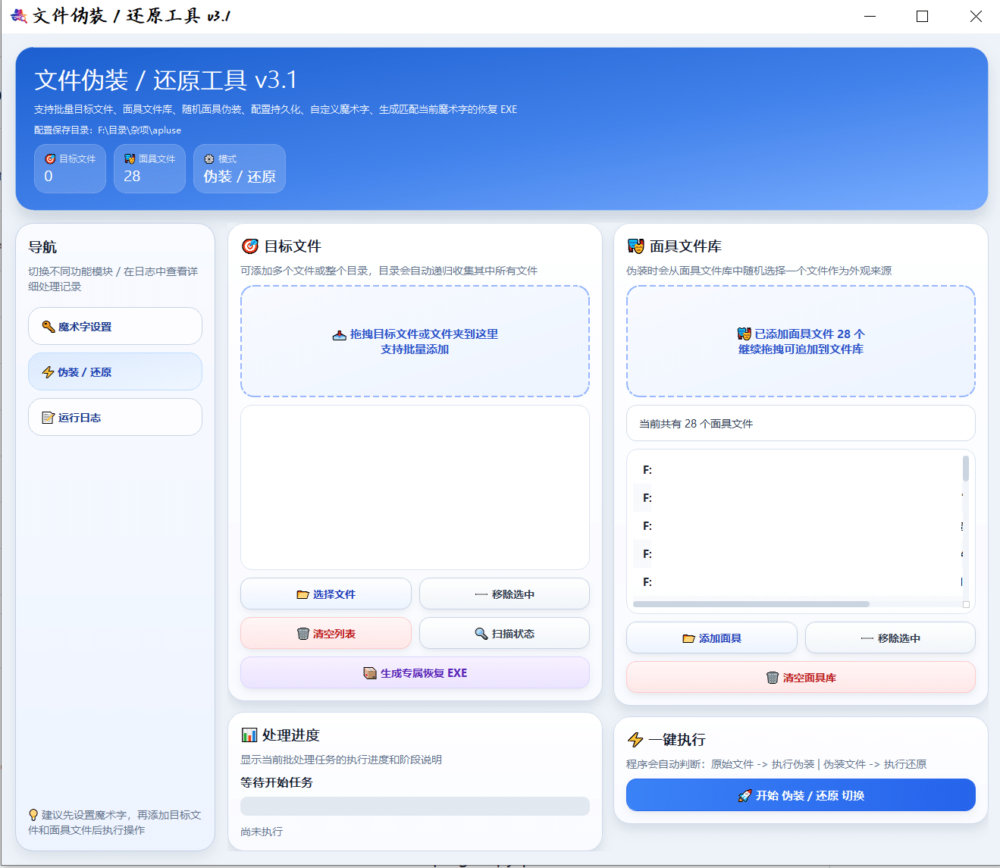
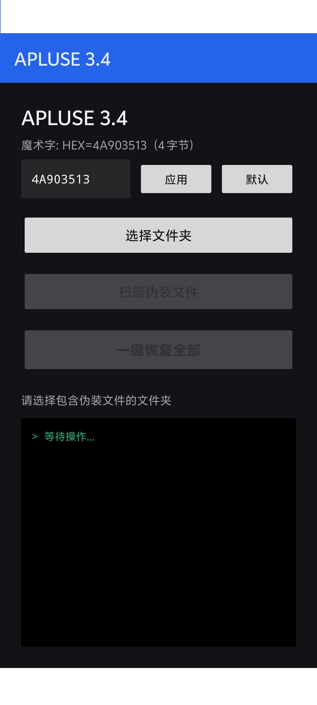

APLUSE ENGINE
网盘目录太透明，先把文件换一张脸
APLUSE 是面向个人用户的文件隐私缓冲工具：在上传云端前，先把文件做形态伪装；在需要时再一键还原。它更像一套“上传前隐私管理流程”，而不是单纯的压缩加密软件。
一句话定位：APLUSE 不是全盘加密，也不是反取证工具；它解决的是“上传前的隐私暴露风险 + 需要时的可控还原”。

由面具决定处理时间更取决于面具，而不是原始文件全量
稳定可控选定面具后，流程更统一，体验更稳定
可换面具可替换伪装形态，适配不同场景
可换密钥魔术字/密钥可更换，建议同步更新恢复工具
先解决真正让人不安的问题
传统压缩加密主要回答“别人能不能打开”；但个人用户常常更担心的是：文件是否在目录里太显眼、会不会被误点开、设备换了以后自己还能不能解开。APLUSE 把问题前移到“上传前”，把恢复路径提前准备好。
1）隐私前置
先做形态伪装，再进入网盘目录，让敏感资料不要那么直白。
2）可控还原
生成 Windows/Android 恢复工具，让自己和接收方都能顺利取回。
3）配置灵活
面具和密钥都可以更换，不锁死在一种配置上。
3 步理解它怎么工作
选文件
把需要保护的文件加入队列。
选面具
选一个用于伪装形态的面具文件。
一键执行
完成伪装；需要时再一键还原。
术语提示：面具是用于替换形态的模板文件，魔术字是用于标记与还原的一串密钥。首次理解时可以把它想成“外衣 + 工牌”。
适合谁、适合哪些场景
云端同步前
上传前先完成形态处理，减少目录里的“一眼敏感”。
上传前先完成形态处理，减少目录里的“一眼敏感”。
跨设备交接
提前准备恢复工具，接收方不必额外学习复杂解压知识。
提前准备恢复工具，接收方不必额外学习复杂解压知识。
个人资料归档
需要时再整理成 .mcpk 归档容器，减少零散文件。
需要时再整理成 .mcpk 归档容器，减少零散文件。
日常隐私管理
在“隐私强度”与“使用便利”之间取得更实用的平衡。
在“隐私强度”与“使用便利”之间取得更实用的平衡。
和传统压缩加密的区别
RAR/ZIP 更擅长什么
- 压缩效率与通用兼容
- 传统办公协作与文件传输
- 成熟生态与用户习惯
APLUSE 更擅长什么
- 上传前的隐私缓冲与形态管理
- 更稳定的“面具相关”处理体验
- 恢复工具化与跨端还原
我们不建议把它当成唯一安全手段。它更适合做“上传前的隐私管理环节”，而不是替代全盘加密或权限管控。
产品截图

